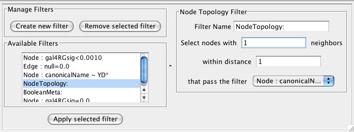
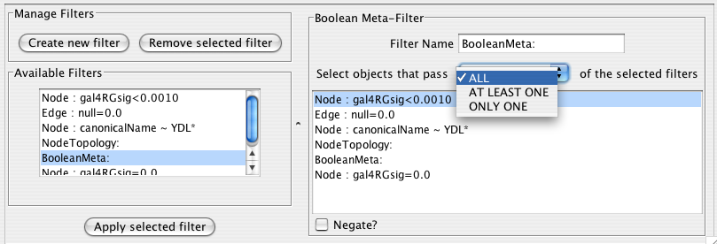

The Cytoscape Filter plugin, which is packaged with the official Cytoscape 2.2 release and is active by default, allows for a wide variety of filtering on node and edge attributes loaded onto Cytoscape networks. For example, you can easily select all the nodes whose name contains a specific pattern that you define. Several types of filters are available. Basic filters allow the selection of multiple nodes or edges according to attribute data:
String filters allow selection of nodes or edges with attributes matching specified patterns. These patterns may include the wildcards * and ?.
Numerical filters allow selection of nodes or edges according to numerical attributes and the mathematical operators >, =, and <.
Compound filters allow selection based on the application of pre-existing filters:
Topology filters allow selection of nodes with neighbors that match some pre-existing filter.
Boolean filters allow the combination of multiple filters using the AND, OR and XOR operators. Example filters are shipped with the plugin to get started.
Using the Plugin
If the Filter plugin is loaded, then you should see a filter icon on the toolbar.

If you press the filter icon, you will see a filters dialog which looks initially like the following:

If the first filter is selected, then the dialog looks as shown:

As for the colors:
The Purple Box: An existing or newly created filter can be edited in this area. Each filter type has its own user interface for editing.
The Orange Box: All available filters are shown in this list. Initially, this list will contain sample filters, but as you create more, they will be added here.
The Cyan Box: Pressing “Create new filter” adds a filter to the “Available Filters” box, and “Remove selected filter” deletes the currently selected filter.
Creating Filters
The “Create new filter” button brings up the Filter creation dialog box, shown below.

The important thing to realize when creating a filter is that the filter does not do anything by itself. Once created, the filter must be run.
String Filter:

The String Filter allows you to filter nodes or edges by a given string node or edge attribute. Attributes that are loaded on the network are available for filtering against. Search terms are entered in the text box at the bottom. For example to match any Node whose canonicalName starts with “YDL” you would select “Node”, “canonicalName” and type “YDL*”. The * is important as it matches any number of characters after YDL. If you want to be more specific and only select nodes whose canonicalName starts with YDL00 followed by any other two characters, you would type “YDL00??”. The “?” denotes any single character, while the “*” represents zero or more characters. Full regular expression searching is supported, although is not covered here. Once the filter is defined, it will be assigned a default descriptive name.
Numerical Filter:

The Numerical Filter also allows you to filter nodes or edges, and presents you with a list of available attributes. This filter matches greater-than, less-than, or equal-to a number you type in the search box.
Node Topology Filter:

The node topology filter allows you to select nodes with at least n neighbors of distance m or less that pass some other selected filter. For instance, to select all the nodes adjacent to a node with the canonical name matching ‘YD*’, you would “select nodes with 1 neighbors”, “within distance 1”, “that pass the filter Node: canonicalName ~ YD*”.
Boolean Filter:

The Boolean Meta-Filter allows you to define a new filter that is a logical combination of existing filters. Available filters are displayed. By selecting one or more filters, you can then choose whether Nodes or Edges pass “ALL” (AND), “AT LEAST ONE” (OR), or “ONLY ONE” (XOR) of the selected filters. Once created Boolean filters can then themselves be combined using the Boolean filter to create arbitrarily complex logical combinations of filters. Note that unlike the String and Numerical Filters, Boolean Filters will need to be assigned a name manually.
Once created, filters are saved for future sessions, as long as you exit Cytoscape normally via the exit command in the File menu (i.e. not via ctrl-c on Linux).
Running filters Any available filter can be run by pressing the ‘Apply selected filter’ button. When a filter is applied and multiple nodes or edges are selected, all of the normal selection-related operations may be performed, such as Delete Selected Node/Edges, Copy To New Network, and Invert Selection.